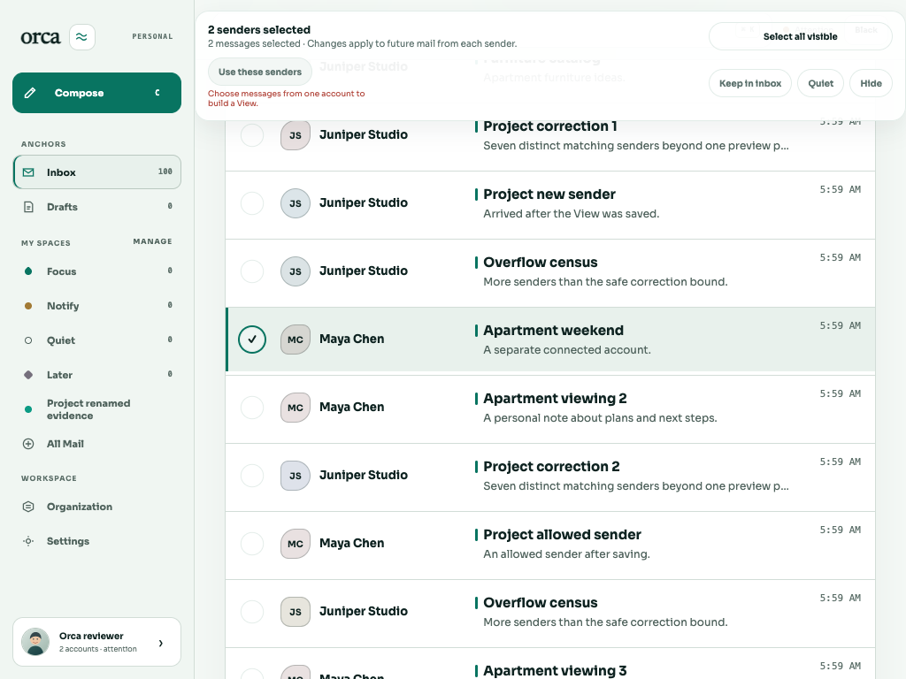
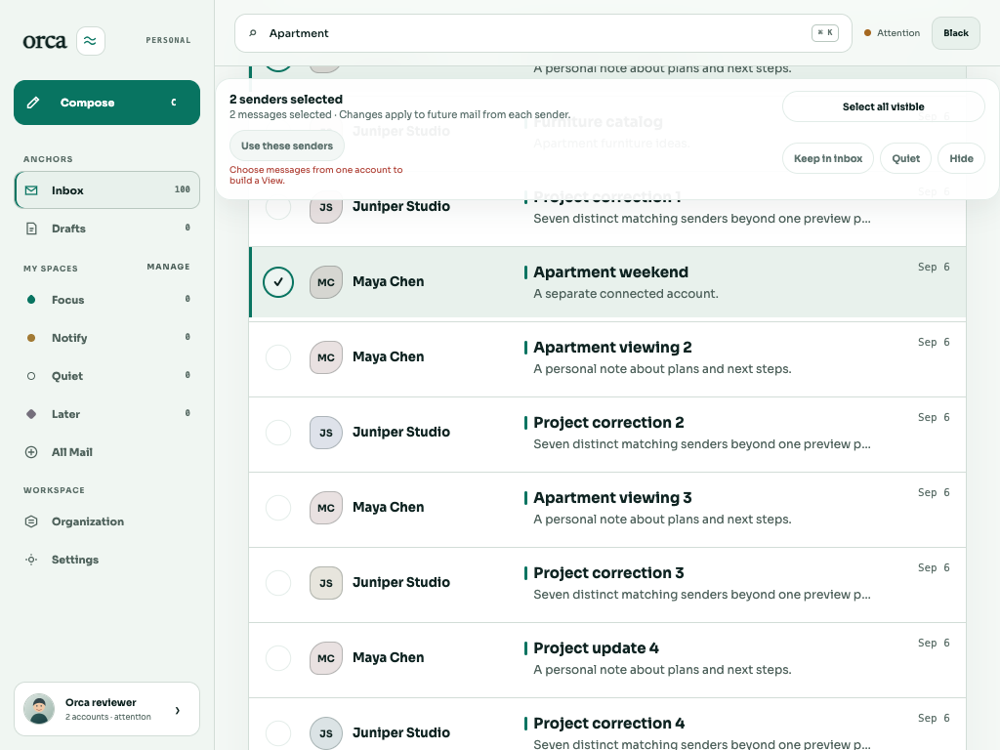

Desktop overlap fixed and browser-verified. The original failure and first-run synchronization failures are preserved. Five local CSS tests timed out; exact-commit hosted checks and independent review remain separate gates.
When a selected message scrolls into view, the sticky selection toolbar covers Search and the theme button. A click intended to change the theme can instead select every visible message.
On the original built app at 1024×768 Light, scrolling “Apartment weekend” into view puts the workspace at scroll 736px. The header occupies 0–68px; the toolbar occupies 12–136.5px. All five sampled theme points hit the toolbar, and Search is also intercepted.
The actual scroll ancestor is .desktop-workspace. The content pane computes to overflow: visible and scroll 0 despite retaining a 768px maximum height. The fix preserves that scroll behavior. A shared 68px desktop header size supplies the toolbar’s sticky offset, leaving a 12px gap. The toolbar layer sits below the header. The toolbar override applies only above 760px; existing mobile header and selection rules remain effective.
This measured diagnosis supersedes the nested-scrollport change proposed in the historical pre-fix plan. Its inherited overflow declaration is overridden at the tested desktop widths; no scrollport or maximum-height change is justified by the reproduced failure.
Runtime scope: apps/web/src/desktop-switch.css. No View, selection, reader navigation, or provider behavior changes.
Source checkpoint: 8a4d508d84858d6f2a679681b56392e2fbef00b2. Original built assets served by the evidence worker: CSS index-BFt98LaZ.css, JavaScript index-DftHYpWp.js. The original dist was not rebuilt or modified. See the existing build receipt for hashes and its recorded source chain.
Actual rectangles, hit targets, scroll ancestors, selected rows and asset URLs · Regression failure

PASS: zero failures · Complete browser command result · Fixed source and asset hashes
| Viewport | Header | Toolbar, empty / mixed | Light and Black |
|---|---|---|---|
| 1024×768 | 0–68px | 80–178px / 80–204.5px | Light · Black |
| 1440×900 | 0–68px | 80–138px / 80–164.5px | Light · Black |
All 16 asserted geometry/hit captures pass at workspace scroll 600 or 1200px. Every header and bulk control passes five pointer points, including disabled controls. Theme actions preserve the selected fixture rows and scroll; four Search → Escape returns do likewise. Twelve Tab-focus records show the expected control, :focus-visible, and a solid 2px outline with 2px offset.

Evidence boundaries: selected identity is the fixture’s unique accessible row label, not an internal database ID. Use the main *mixed-deep*.png captures for deep-scroll geometry. The separate *focus.png captures prove focus appearance; keyboard traversal may naturally scroll back toward the heading. These observations do not certify every unrelated control’s contrast.
The first fixed-build run used a fixed 650ms delay after theme clicks. Four post-theme captures reported 28 wrong targets, all HTML, despite correct geometry, selection and scroll. See the untouched failure result, first-run log and representative raw measurement.
The app removes data-orca-transition when transition.finished settles. The final harness waits for that signal and the expected theme, retaining every geometry and hit assertion. All 16 captures then passed on the same product assets, with transition: null recorded. The *timing.json files record click plus CLI/wait elapsed time, not pure animation duration. No product behavior, timeout threshold or workflow was changed to obtain the passing result.
Start the existing disposable reviewer app in a resource slot, open its scratch login using a named agent-browser session, and enter Inbox. The harness uses the real public app controls and the seeded work/personal Maya rows. It does not create Views or change mail data. Current-state mode can inspect a handed-off scrolled session without resetting it.
agent-browser skills get core --full # Existing scratch app must already be running and authenticated. bun apps/web/scripts/check-selection-header.ts --session NAME --matrix --output /tmp/selection-green # Current-state probe; --keep-session is only for an explicitly handed-off session. bun apps/web/scripts/check-selection-header.ts --session NAME --keep-session --output /tmp/selection-red
The matrix checks 1024×768 and 1440×900, Light and Orca Black, zero selected rows and mixed-account selection, header/toolbar viewport bounds, non-overlap, and five pointer points for each control including disabled controls. Actual theme clicks and Search → Escape returns must preserve the selected fixture rows and workspace scroll. Tab must produce a visible focus ring. The command exits nonzero on failure and writes JSON plus screenshots. The browser closes by default.
Asserted smoke measurements and limitations. These use the same disposable real-API fixture; they create no saved View.
| Check | Actual result |
|---|---|
| Original geometry probe | Exit 1: header interception reproduced before CSS edits. |
| Focused local tests | 11 pass, 5 timeout failures, 366 assertions, 156.07s. Existing Happy DOM CSS tests exceeded unchanged 5/10/15s limits; no assertion mismatches were reported. First invocation could not load happy-dom; frozen-lockfile installation then succeeded. |
| Root production build | Exit 0, shared/API/web; 170 Vite modules. Existing >500kB chunk warning retained. One root command uses workspace fanout; no test/browser overlap. |
| Browser regression | Exit 0 after lifecycle-aware synchronization; first failed run retained above. |
| Root lint | Exit 0, shared/API/web. Ran after browser/server cleanup. |
| Hosted typecheck/full tests | Required on the exact pushed fix commit. Full tests were not rerun locally after the focused timeout failures. |
Cleanup receipt: browser closed, owned server exited 0, ports released, scratch database removed. Fixed built assets remain available for coordinated independent verification. Independent review and hosted checks attach to the immutable additive commit; this bounded fix does not close the wider BRE-387 release or human-usability gates.
{kind=link}
{kind=link}
{kind=link}
{kind=link}
{kind=link}
{kind=link}
{kind=link}
{kind=link}
{kind=link}
{kind=link}
{kind=link}
{kind=link}
{kind=link}
{kind=link}
{kind=link}
{kind=link}
{kind=link}
{kind=link}